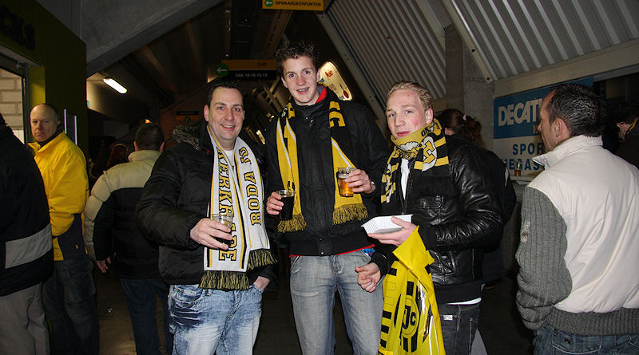
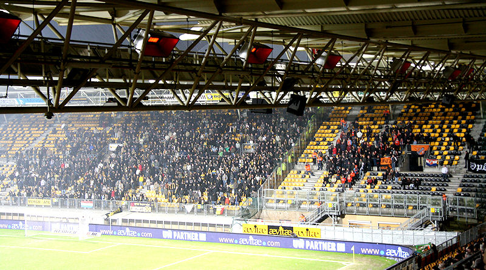

Uit een hoekschop van Dominique van Dijk kopt Bakens ongehinderd raak: 0-1,
(15').
Het is zodoende al gauw feest bij de Volendammers.
Voor de tweede helft begeeft het publiek van de westtribune zich naar de
(lege) oosttribune.

Dit kunstje werd verleden seizoen al in de bekerwedstrijd tegen De
Graafschap vertoond.

Rodafans uit Roermond.

De verplaatsing is voltooid.
De gelijkmaker door Matondo: 1-1, (55').
Roda zet flink aan en creëert veel kansen die vaak knullig verprutst worden.
Na een verdedigingsfout aan Volendam-zijde kan De Fauw de
bal links voorbij doelman Verhoeven schuiven: 2-1, (67').
Roda dat veel corners mag nemen haalt daar weinig rendement uit, te meer er
vaak nutteloze korte ballen worden gespeeld. Hoe je wèl een
goede hoekschop neemt wordt hier gedemonstreerd door FC Volendam.
Invaller Platje kan van dichtbij intikken: 2-2, (74').
Enkele onvriendelijkheden worden uitgewisseld.
Roda volhardt in het verprutsen van kansen en omdat Volendam ook weinig
paraat maakt krijgt het publiek een verlenging voor het tientje
entreegeld.
Platje heeft wederom toegeslagen: 2-3, (96').
Volendam rekt slim tijd met voortdurend gesimuleerde blessures en een
vertragende doelman.
Roda redt het niet meer. Het is zelfs pathetisch om te zien dat de club
zonder spitsen verdediger Kah in de voorhoede moet posteren.
Volendam bekert verder. Het voordeel van deze uitschakeling is dat FC
Luchtkasteel ook langs deze weg GEEN vliegende start zal krijgen!